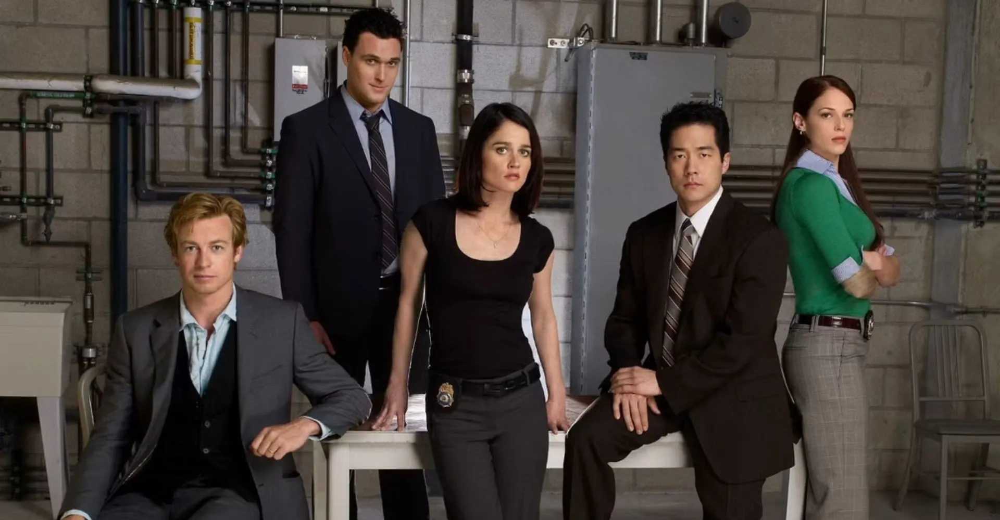
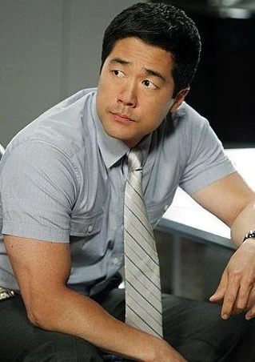

O Mentalista acompanha Patrick Jane, um consultor extremamente observador que trabalha ajudando a polícia a solucionar diversos crimes.
Patrick consegue perceber pequenos detalhes e analisar o comportamento das pessoas para descobrir pistas.
Ao longo da série, ele também procura descobrir a identidade de Red John, uma pessoa ligada ao seu passado.
Consultor observador e especialista em analisar o comportamento das pessoas.
Agente responsável pela equipe e parceira de Patrick nas investigações.

Agente sério, inteligente e dedicado ao trabalho policial.
Agente que participa das investigações junto com a equipe.
Agente determinada que participa de diversas investigações.